Codex Cloud 是 Codex 的云端运行模式。任务会在远程环境中执行，即使电脑休眠也可以继续工作，不会占用本地开发环境。
你可以从 ChatGPT 网页端、移动端或桌面 App 发起和继续 Cloud 任务，也可以通过 Codex CLI 提交任务、查看最近的任务和状态。它不再只是一个“浏览器里连接 GitHub 仓库”的独立页面。
新版与旧版 Cloud#
打开 ChatGPT 设置，可以看到 Codex 云端 和 Codex 云端（旧版） 两个入口。
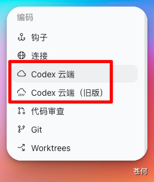
它们目前都可以使用，但用途不同：
- Codex 云端：这是目前主要使用的新版功能。你可以在这里创建和管理云端环境，然后通过网页端、移动端或桌面 App 让 Codex 在云端处理任务。每个任务都会在独立的工作区中运行，不会影响其他任务。
- Codex 云端（旧版）：主要用于代码审查，以及 Linear 和 GitHub 集成。OpenAI 已计划在未来停止旧版服务，但目前还没有公布具体时间。
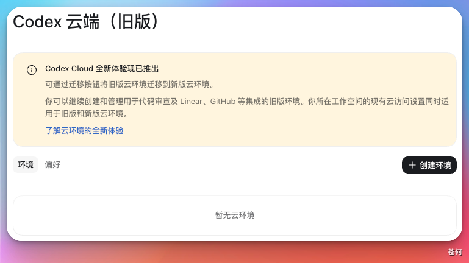
下面会先介绍新版 Codex Cloud 的使用方法。旧版的操作步骤和截图仍保留在后文，方便还在使用相关集成的用户查阅。
适合场景#
- 较长的任务，不想占用本地资源
- 多个任务并行推进，并让每个任务保持独立状态
- 让 Codex 在远程环境中分析仓库、修改代码并提出 PR
- 需要在网页、手机或桌面 App 之间继续同一个任务
- 多个任务需要复用同一套依赖、工具和服务配置
新版 Codex Cloud 如何使用#
第 1 步：选择 Cloud 运行模式#
在 ChatGPT 网页端或桌面 App 中新建任务，然后依次选择 Work in > Cloud > Select environment。
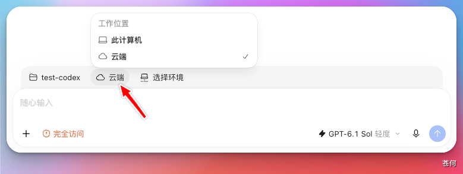
这里的 environment，可以简单理解为 Codex 在云端使用的“工作环境”，里面保存了项目仓库、依赖和工具等配置。选择一个已经准备好的环境，就可以开始任务。
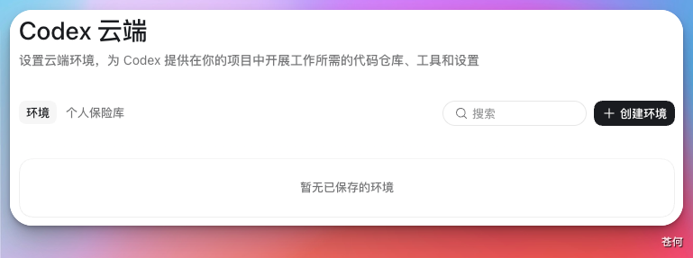
如果使用手机，打开 Codex 后也可以选择已有的云端环境。不过，手机端目前不能创建新环境。如果还没有可用的环境，需要先在网页端或桌面 App 中创建。
第 2 步：创建或选择 Cloud environment#
你可以把 Cloud environment 理解成一台提前准备好的“云端开发电脑”。里面会保存 Codex 完成任务需要的项目和设置，例如：
- 要处理的 GitHub 项目
- 项目运行需要的依赖和开发工具
- 安装项目、启动服务时要执行的命令
- 项目需要的环境变量和访问凭据
- 是否允许联网，以及可以访问哪些网站
- 这个环境是自己使用，还是可以分享给团队成员
如果页面中已经有准备好的环境，选择它就可以开始任务。
如果是第一次使用，点击 Create environment（创建环境），按照提示连接 GitHub，然后选择想让 Codex 处理的项目仓库。
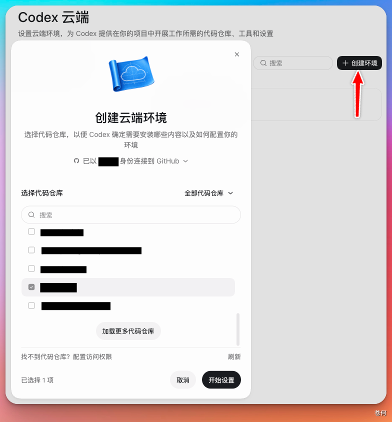
第 3 步：让 Codex 准备并测试环境#
点击 Get started（开始） 后，Codex 会先读取项目文件，判断这个项目需要哪些运行环境和工具，然后自动安装依赖，并尝试启动和测试项目。
如果准备过程中缺少信息，例如不知道应该使用哪个版本、执行什么命令，或者需要登录某项服务，Codex 会向你提问。按照页面提示补充即可。
环境准备成功后，Codex 会把刚才验证过的步骤保存下来。
其中，Install script 用来记录如何安装项目，Start skill 用来记录如何启动项目以及怎样确认项目已经正常运行。一般情况下，你不需要从头编写这些内容，只需要检查 Codex 生成的结果是否正确。
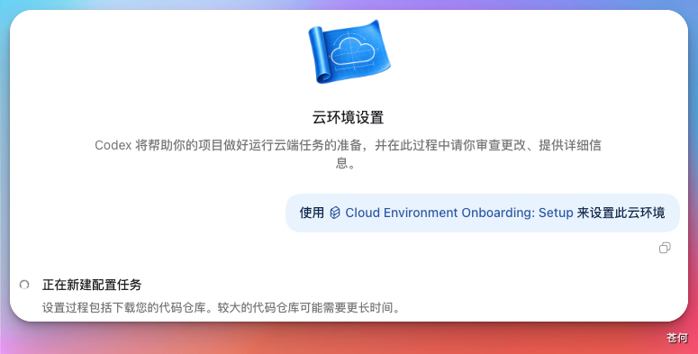
第 4 步：检查并发布环境#
环境准备完成后，Codex 会显示一份结果报告。你需要确认依赖是否安装成功、项目能否正常启动、测试是否通过，以及页面上还有没有提示需要处理的问题。
确认没有问题后，先保存设置，再点击 Publish（发布）。“发布环境”可以理解成保存一份已经准备好的云端开发模板。以后创建新任务时，Codex 会直接使用这份模板，不需要每次都从头安装和配置。
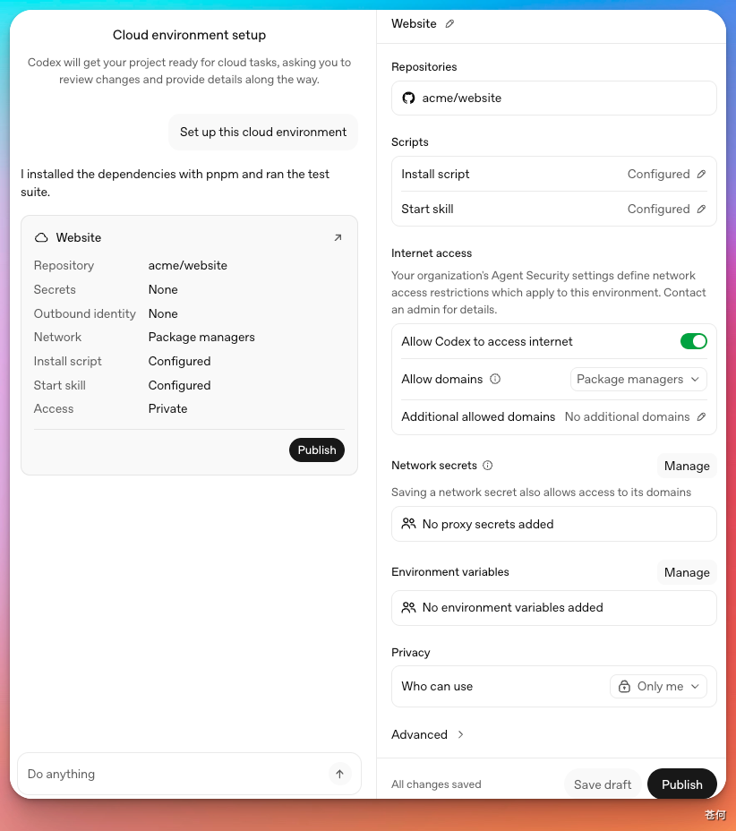
如果以后修改了环境设置，需要再次发布，新的任务才能使用修改后的配置。已经开始的任务不会跟着变化，仍会保留各自原来的文件和运行状态。
第 5 步：开始并检查任务#
看到 Environment published（环境已发布） 后，说明云端环境已经准备完成。点击 Start a new task（开始新任务），然后告诉 Codex 你想让它做什么，例如修复一个问题、添加一个功能或运行项目测试。
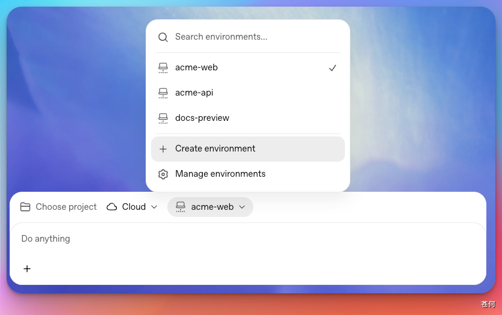
开始任务时，Codex 会根据刚才发布的环境创建一个单独的工作区。你可以把它理解成复制出一份新的项目副本：这个任务中的修改不会影响其他 Cloud 任务。
Codex 完成工作后，你可以：
- 查看它修改了哪些文件，以及测试是否通过
- 继续发送消息，让它修改或补充结果
- 确认无误后提交代码，或者创建 Pull Request
- 在网页端、移动端或桌面 App 中重新打开这个任务并继续处理
环境变量和 Network secrets#
有些项目在运行时需要额外的信息，例如运行模式、数据库地址或第三方服务的访问凭据。这些内容不会自动从你的电脑同步到云端，需要单独添加到 Cloud environment 中。
添加时可以选择以下两种方式：
- 环境变量：适合程序需要直接读取的配置，例如运行模式或服务地址。它的值会直接提供给云端环境中的程序，任务也能读取到。
- Network secret（网络密钥）：适合访问外部服务时使用的敏感凭据，例如 API Token。任务通常只能看到一个占位内容；当请求发送到你允许的网站时，系统才会替换成真正的凭据。
配置 Network secret 时，还要填写它允许访问的网站域名。只开放项目确实需要的网站，不要直接允许访问所有网站，这样更安全。
旧版 Codex Cloud 使用流程#
Codex Cloud（旧版） 目前仍然可以使用，主要服务于以下功能：
- 检查代码改动，也就是 Code Review（代码审查）
- 在 Linear 中调用 Codex 处理任务
- 在 GitHub 中调用 Codex 处理任务
如果你正在使用这些功能，可以继续参考下面的旧版操作步骤。如果只是想让 Codex 在云端修改项目，建议使用前面介绍的新版 Codex Cloud。
第 1 步：打开旧版 Codex Cloud#
旧版入口：https://chatgpt.com/codex/cloud
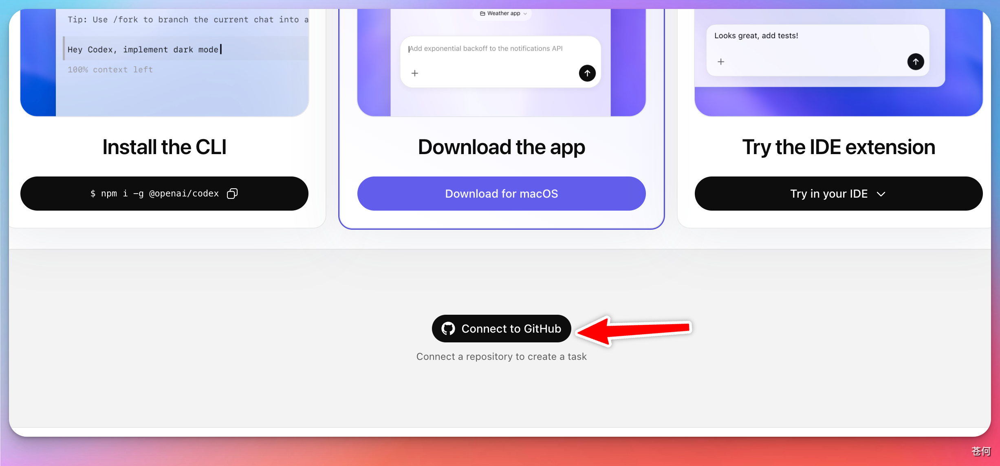
连接成功后会进入旧版任务页面：

第 2 步：授权并选择仓库#
旧版 Cloud 工作流需要先完成 GitHub 授权。你可以授权全部仓库，也可以只选择特定仓库：

第 3 步：下达指令，查看任务进度#
下达指令后，Codex 会在云端执行任务。你可以打开任务查看执行过程、中间状态、最终回答和产出内容：
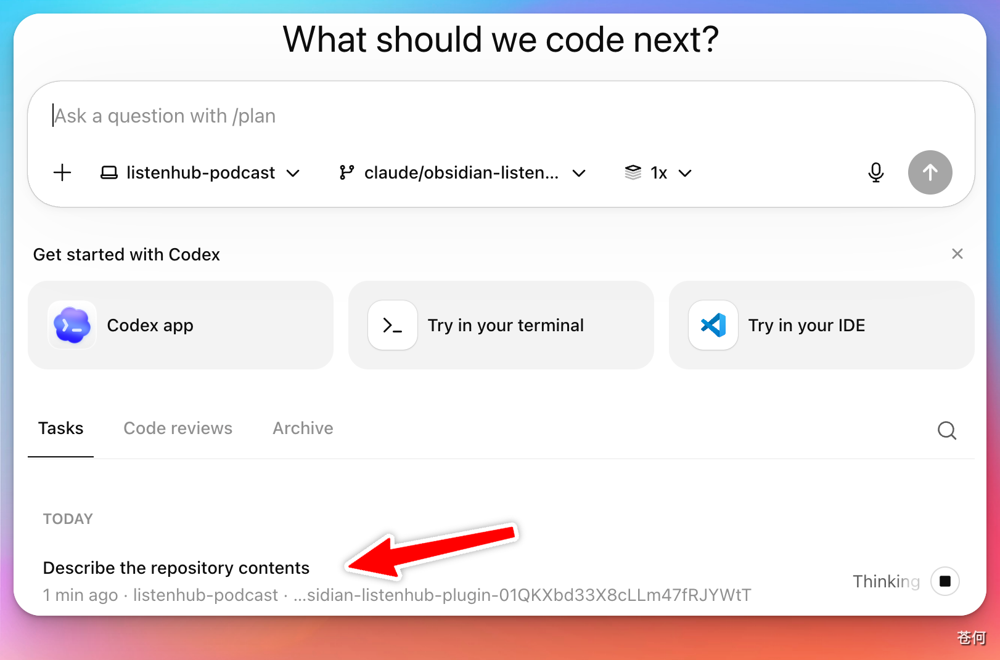
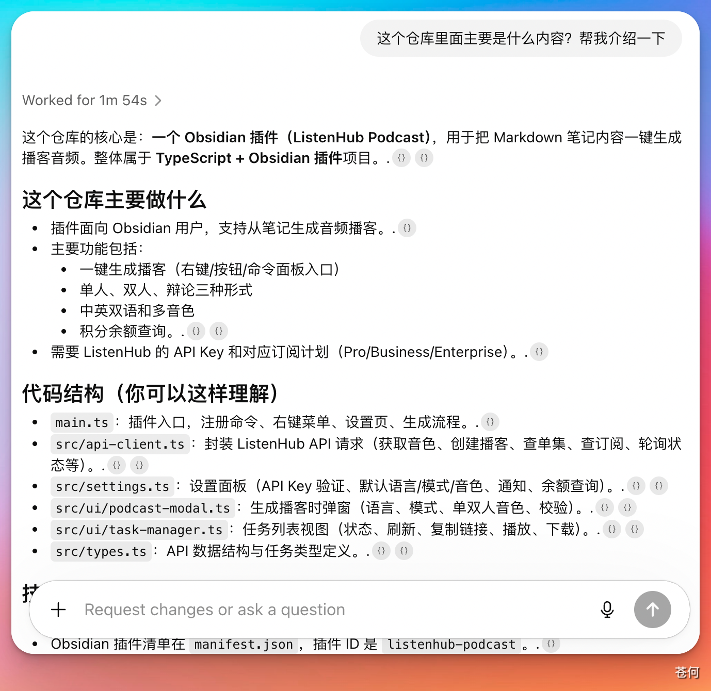
Local、Worktree 与 Cloud 的区别#
很多人会误以为，打开桌面 App 后，Codex 就只能在本地电脑上运行。实际上，桌面 App 只是操作入口。新建任务时，你还可以选择让任务在本地目录、独立的 Worktree 或云端环境中运行。
这三种运行模式的区别如下：
| 运行模式 | 任务在哪里运行 | 使用哪些项目文件 | 适合什么情况 |
|---|---|---|---|
| Local | 你的本地电脑 | 直接使用当前项目目录中的文件 | 直接修改本地项目，并使用电脑上已经安装的工具 |
| Worktree | 你的本地电脑 | 使用 Git 创建的一份独立项目副本 | 同时处理多个任务，又不想影响当前项目目录 |
| Cloud | OpenAI 提供的云端环境 | 使用已发布环境中的项目副本 | 执行较长的任务、离开电脑后继续运行，或者在不同设备上继续处理 |
简单来说，Local 和 Worktree 使用的是本地电脑，Cloud 使用的是远程云端环境。选择运行模式时，只需要考虑你希望任务在哪里运行，与从哪个客户端打开 Codex 没有关系。
下一步#
下一步：理解费用与上下文。